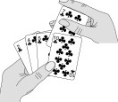
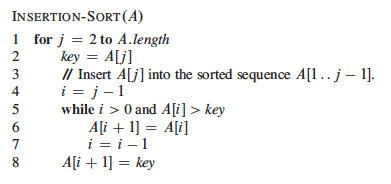
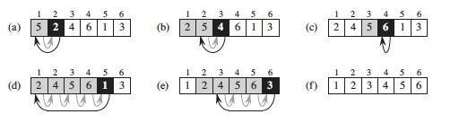
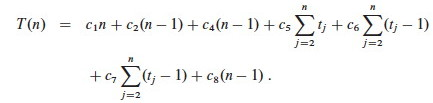
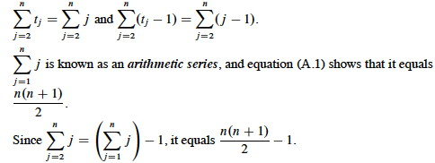

Outline
- The Sorting Problem
- Insertion Sort: An Incremental Strategy
- Loop Invariants and Correctness of Insertion Sort
- RAM Model; What do we count?
- Analysis of Insertion Sort: Best and Worst Cases
- Worst Case Rate of Growth and Θ (Theta)
- Merge Sort: A Divide & Conquer Strategy
- Brief Comment on Merge Sort Correctness
- Analysis of Merge Sort: Recurrence Relations and Recursion Tree
Modeling a Problem: The Sorting Problem
Problem Formulation
Clear and unambiguous definition of what to be solved in terms of:
- Input of the problem
- Output of the problem
- Assumptions in the problem
Descriptions in a problem formulation must be declarative (not procedural). All assumptions concerning input and output must be explicit. The problem formulation provides the requirements for an algorithm.
Problem Formulation for Sorting
Input:
A sequence σ of n real numbers xi (1 ≤ i ≤ n)
Assumptions:
- n is a positive integer.
The real numbers xi (1 ≤ i ≤ n) are not necessarily distinct. Output:
A permutation π = x'1 x'2 x'n of the given sequence σ such that x'j ≤ x'j+1 for every j (1 ≤ j < n)
The numbers are referred to as keys.
Additional information known as satellite data may be associated with each key.
Sorting is hugely important in most applications of computers. We will cover several ways to solve this problem in this course.
Insertion Sort: An Incremental Strategy

Insertion sort takes an incremental strategy of problem solving: pick off one element of the problem at a time and deal with it. Our first example of the text's pseudocode:

Here's a step by step example:

Is the strategy clear? For fun, see the visualization at http://youtu.be/ROalU379l3U
Loop Invariants and Correctness of Insertion Sort
Loop Invariants
A loop invariant is a formal property that is (claimed to be) true at the start of each iteration. We can use loop invariants to prove the correctness of iteration in programs, by showing three things about the loop invariant:
Initialization: It is true prior to the first iteration. Maintenance: If it is true prior to a given iteration, then it remains true before the next iteration. Termination: When the loop terminates, the invariant (and the conditions of termination) gives us a useful property that helps to show that the algorithm is correct.
Notice the similarity to mathematical induction, but here we have a termination condition.
Correctness of Insertion Sort
Loop Invariant:
At the start of each iteration of the outer for loop at line 1, the subarray A[1 .. j-1] consists of the elements originally in A[1 .. j-1] but in sorted order.
Initialization:
We start with j=2. The subarray A[1 .. j-1] is the single element A[1], which is the element originally in A[1] and is trivially sorted.
Maintenance:
A precise analysis would state and prove another loop invariant for the while loop. For simplicity, we'll note informally that at each iteration the elements A[j-1], A[j-2], A[j-3], etc. are shifted to the right (so they remain in the sequence in proper order) until the proper place for key (the former occupant of A[j]) is found. Thus at the next iteration, the subarray A[1 .. j] has the same elements but in sorted order.
Termination:
The outer for loop ends when j=n+1. Therefore j-1=n. Plugging n into the loop invariant, the subarray A1 .. n consists of the elements originally in A[1 .. n] but in sorted order.
Convinced? Questions? Could you do it with another problem?
RAM Model: What do we count?
If we are going to tally up time (and space) requirements, we need to know what counts as a unit of time (and space). Since computers differ from each other in details, it is helpful to have a common abstract model.
Random Access Machine (RAM) Model
The RAM model is based on the design of typical von Neumann architecture computers that are most widely in use. For example:
- Instructions are executed one after the other (no concurrent operations).
- Instructions operate on a small number (one or two) of data "words" at a time.
- Data words are of a limited, constant size (cannot get arbitrarily large computation done in one operation by putting the data in an arbitrarily large word).
Categories of Primitive Operations
We identify the primitive operations that count as "one step" of computation. They may differ in actual time taken, but all can be bounded by the same constant, so we can simplify things greatly by counting them as equal.
Data Manipulation
- Arithmetic operation: +, -, *, /, remainder, floor, ceiling, left/right shift
- Comparison: <, =, >, ≤, ≥
- Logical operation: ∧, ∨, ¬
These assume bounded size data objects being manipulated, such as integers that can be represented in a constant number of bits (e.g, a 64-bit word), bounded precision floating numbers, or boolean strings that are bounded in size. Arbitrarily large integers, arbitrarily large floating point precision, and arbitrarily long strings can lead to nonconstant growth in computation time.
Flow Control
- Branch: case, if, etc.
- Loop; while, for __ <- ___ to ___
Here we are stating that the time to execute the machinery of the conditional loop controllers are constant time. However, if the language allows one to call arbitrary methods as part of the boolean expressions involved, the overall execution may not be constant time.
Miscellaneous
- Assignment: <-
- Subscription: [ ]
- Reference
- Setting up a procedure or function call (see below)
- Setting up an I/O operation (see below)
The time to set up a procedure call is constant, but the time to execute the procedure may not be. Count that separately. Similarly, the time to set up an I/O operation is constant, but the time to actually read or write the data may be a function of the size of the data. Treat I/O as constant only if you know that the data size is bounded by a constant, e.g., reading one line from a file with fixed data formats.
Input Size
Time taken is a function of input size. How do we measure input size?
- It is often most convenient to use the number of items in the input, such as the number of numbers being sorted.
- For some algorithms we need to measure the size of data, such as the number of bits in two integers being multiplied.
- For other algorithms we need more than one number, such as the number of vertices and edges in a graph.
Analysis of Insertion Sort: Best and Worst Cases
We now undertake an exhaustive quantitative analysis of insertion sort. We do this analysis in greater detail than would normally be done, to illustrate why this level of detail is not necessary!!!
For each line, what does it cost, and how many times is it executed?
We don't know the actual cost (e.g., in milliseconds) as this varies across software and hardware implementations. A useful strategy when you do not know a quantity is to just give it a name ...

The ci are the unknown but constant costs for each step. The tj are the numbers of times that line 5 is executed for a given j. These quantities depend on the data, so again we just give them names.
Let T(n) be the running time of insertion sort. We can compute T(n) by multiplying each cost by the number of times it is incurred (on each line) and summing across all of the lines of code:

Best Case

When the array is already sorted, we always find that A[i] ≤ key the first
time the while loop is run; so all tj are 1 and tj-1 are 0. Substituting
these values into the above:

As shown in the second line, this is the same as an + b for suitable constants a and b. Thus the running time is a linear function of n.
Worst Case
When the array is in reverse sorted order, we always find that A[i] > key in the while loop, and will need to compare key to all of the (growing) list of elements to the left of j. There are j-1 elements to compare to, and one additional test for loop exit. Thus, tj=j.
 
Plugging those values into our equation:
We get the worst case running time, which we simplify to gather constants:

T(n) can be expressed as an2 + bn + c for some a, b, c: T(n) is a quadratic function of n.
So we can draw these conclusions purely from mathematical analysis, with _ no implementation or testing needed_: Insertion sort is very quick (linear) on already sorted data, so it works well when incrementally adding items to an existing list. But the worst case is slow for reverse sorted data.
Worst Case Rate of Growth and Θ (Theta)
From the above example we introduce two key ideas and a notation that will be elaborated on later.
Worst Case Analysis
Above, both best and worst case scenarios were analyzed. We usually concentrate on the worst-case running times for algorithms, because:
- This gives us a guaranteed upper bound.
- For some algorithms, the worst case occurs often (such as failing to find an item in a search).
- The average is often almost as bad as the worst case.
How long does it take on average to successfully find an item in an unsorted
list of n items?
How long does it take in the worst case, when the item is not in the list?
What is the difference between the two?
Rate of Growth
In the above example, we kept track of unknown but named constant values for the time required to execute each line once. In the end, we argued that these constants don't matter!
- Their specific values don't matter because they all add up to summary constants in the equations (e.g., a and b).
- Even their presence does not matter, because it is the growth of the function of n that dominates the time taken to run the algorithm.
This is good news, because it means that all of that excruciating detail is not needed!
Furthermore, only the fastest growing term matters. In an2 + bn + c, the growth of n2 dominates all the other terms (including bn) in its growth.
Theta: Θ
We will use Θ notation to concentrate on the fastest growing term and ignore constants.
If we conclude that an algorithm requires an2 + bn + c steps to run, we will dispense with the constants and lower order terms and say that its growth rate (the growth of how long it takes as n grows) is Θ(n2).
If we see bn + c we will write Θ(n).
A simple constant c will be Θ(1), since it grows the same as the constant 1.
When we combine Θ terms, we similarly attend only to the dominant term. For example, suppose an analysis shows that the first part of an algorithm requires Θ(n2) timeand the second part requires Θ(n) time. Since the former term dominates, we need not write Θ(n2 + n): the overall algorithm is Θ(n2).
Formal definitions next week!
Merge Sort: A Divide & Conquer Strategy
Another strategy is to Divide and Conquer:
Divide the problem into subproblems that are smaller instances of the same problem. Conquer the subproblems by solving them recursively. If the subproblems are small enough, solve them trivially or by "brute force." Combine the subproblem solutions to give a solution to the original problem.
Merge Sort takes this strategy:
Divide:
Given A[p .. r], split the given array into two subarrays A[p .. q] and A[q+1 .. r] where q is the halfway point of A[p .. r].
Conquer:
Recursively sort the two subarrays. If they are singletons, we have the base case.
Combine:
Merge the two sorted subarrays with a (linear) procedure Merge that iterates over the subarrays from the smallest element up to copy the next smallest element into a result array.
(This is like taking two decks of sorted cards and picking the next smallest
one off to place face-down in a new pile to make one sorted deck.)
The strategy can be written simply and elegantly in recursive code ...

Here are examples when the input is a power of two, and another example when it is not a power of two:

Now let's look in detail at the merge procedure, implemented using ∞ as sentinels (what do lines 1-2 do? lines 3-9 ? lines 10-17?):

Here's an example of how the final pass of MERGE(9, 12, 16) happens in an
array, starting at line 12. Entries with slashes have had their values copied
to either L or R and have not had a value copied back in yet. Entries in L and
R with slashes have been copied back into A.
We can also dance this one: http://youtu.be/XaqR3G_NVoo
Merge Sort Correctness
A loop invariant is used in the book to establish correctness of the Merge procedure. Since the loop is rather straightforward, we will leave it to the above example. Once correctness of Merge is established, induction can be used to show that Merge-Sort is correct for any N.
Analysis of Merge Sort: Recurrence Relations and Recursion Tree
Merge Sort provides us with our first example of using recurrence relations and recursion trees for analysis. We will go into more detail on these methods when we cover Chapter 4.
Analysis of Merge
Analysis of the Merge procedure is straightforward. The first two for loops
(lines 4 and 6) take Θ(n1+n2) = Θ(n) time, where n1+n2 = n. The last
for loop (line 12) makes n iterations, each taking constant time, for
Θ(n) time. Thus total time is Θ(n).
Analyzing Divide-and-Conquer Algorithms
Recurrence equations are used to describe the run time of Divide & Conquer algorithms. Let T(n) be the running time on a problem of size n.
- If n is below some constant (or often, n=1), we can solve the problem directly with brute force or trivially in Θ(1) time.
- Otherwise we divide the problem into a subproblems, each 1/b size of the original. Often, as in Merge Sort, a = b = 2.
- We pay cost D(n) to divide the problems and C(n) to combine the solutions.
- We also pay cost aT(n/b) solving subproblems.
Then the total time to solve a problem of size n by dividing into a problems of size n/bcan be expressed as:

Recurrence Analysis of Merge Sort
Merge-Sort is called with p=1 and r=n. For simplicity, assume that n is a power of 2. (We can always raise a given n to the next power of 2, which gives us an upper bound on a tighter Θ analysis.) When n≥2, the time required is:
- Divide (line 2): Θ(1) is required to compute q as the average of p and r.
- Conquer (lines 3 and 4): 2T(n/2) is required to recursively solve two subproblems, each of size n/2.
- Combine (line 5): Merging an n-element subarray takes Θ(n) (this term absorbs the Θ(1) term for Divide).

In Chapter 4 we'll learn some methods for solving this, such as the Master Theorem, by which we can show that it has the solution T(n) = Θ(n lg(n)). Thus, Merge Sort is faster than Insertion Sort in proportion to the difference in growth of lg(n) versus n.
Recursion Tree Analysis
Recursion trees provide an intuitive understanding of the above result. In general, recursion trees can be used to plan out a formal analysis, or even constitute a formal analysis if applied carefully.
Let's choose a constant c that is the largest of all the constant costs in the algorithm (the base case and the divide steps). Then the recurrence can be written:

It costs cn to divide the original problem in half and then to merge the results. We then have to pay cost T(n/2) twice to solve the subproblems:
For each of the two subproblems, n/2 is playing the role of n in the recurrence. So, it costs cn/2 to divide and then merge the n/2 elements, and T(n/4) to solve the subproblems:

If we continue in this manner we eventually bottom out at problems of size 1:

Notice that if we sum across the rows each level has cost cn. So, all we have to do is multiply this by the number of levels. Cool, huh?
But how many levels are there? A little thought (or a more formal inductive proof you'll find in the book) shows that there are about (allowing for the fact that n may not be a power of 2) lg(n)+1 levels of the tree. This is because you can only divide a power of two in half as many times as that power before you reach 1, and n = 2lg(n). The 1 counts the root note before we start dividing: there is always at least one level.
Questions? Does it make sense, or is it totally mysterious?
One more Animation
Recapitulating our conclusions, we have seen that Insertion sort is quick on already sorted data, so it works well when incrementally adding items to an existing list. Due to its simplicity it is a good choice when the sequence to sort will always be small. But for large inputs Merge Sort will be faster than Insertion Sort, as n2 grows much faster than nlg(n). Each sort algorithm has different strengths and weaknesses, and performance depends on the data. Some of these points are made in the following visualizations (also watch for patterns that help you understand the strategies):
http://www.sorting-algorithms.com/ (set to 50 elements)
Next
Next week we cover Chapter 3: Growth of Functions and Asymptotic Concepts. Problems will be posted for my students in Laulima.
Dan Suthers Last modified: Tue Apr 15 16:09:15 HST 2014
Images are from the instructor's manual for Cormen et al.